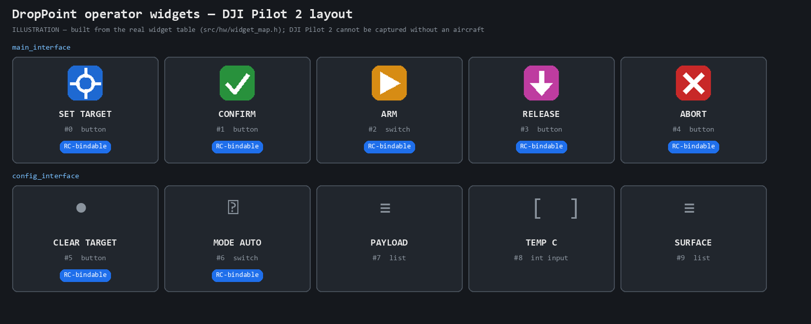
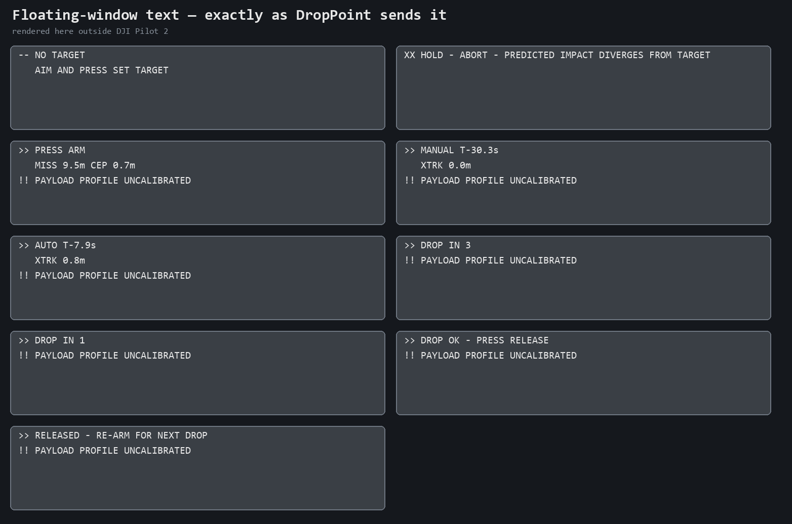

DropPoint
Precision payload-drop guidance for DJI enterprise aircraft —
DJI Matrice 4T and Matrice 400
DropPoint computes where a payload will land and
tells the operator exactly when to release — inside DJI Pilot 2,
the app your pilots already use. Nothing installs on the remote
controller.
What the operator sees in DJI Pilot 2

DropPoint's controls appear inside Pilot 2:
SET TARGET, CONFIRM, ARM, RELEASE, ABORT plus mode and payload
selectors.

A floating window over the live feed shows the status,
steering command and countdown — updated continuously.
How a drop works
Set target. Put the camera crosshair on the landing spot
and press SET TARGET. DropPoint shows the range, bearing
and elevation source — press CONFIRM.
Arm. One press. Every drop needs a fresh arm — the system
cannot fire twice from one arming.
Fly the approach. The window steers the pilot:
MOVE 4.0m BRG 265 — until it reads
>> DROP OK.
Countdown. T-3 … T-2 … T-1 … DROP on screen,
with audible beeps where the aircraft supports them.
Release. The operator triggers the drop kit — or, on the
Matrice 400 with a supported kit, DropPoint can release automatically
once every safety check passes.
Abort anytime. ABORT disarms instantly from
any state — even mid-countdown — and the release output returns to
safe.
What it accounts for — continuously
Ballistics. Full trajectory integration with payload drag and
optional deployed drag area.
Wind. Estimated in flight with an altitude gradient model —
crosswind beyond the profile limit holds the drop.
Terrain. Ground elevation from terrain tiles or the laser
rangefinder (Matrice 400 + Manifold 3), tied to the take-off point.
Motion & latency. Aircraft velocity, camera latency and
release-mechanism delay are part of the solution, not afterthoughts.
Accuracy estimate. A dispersion estimate (200-sample spread)
tells the operator the expected miss before committing.
Safety gates. Stale target, low GNSS count, missing terrain,
excessive motion or out-of-corridor predictions all hold the drop.
Compatible drop kits
| Aircraft | Drop kits | Trigger |
|---|
Matrice 4T
(200 g total payload) |
JZ AD2 (43 g) · CZI FT4-P (50 g) · CZI TH2 (70 g) |
Operator in Pilot 2 |
Matrice 400
(up to 6 kg payload) |
CZI TH4 V3 · JZ PTS4 / UT4A / PL10 · DroMight Talon ·
Cybowindow 4-hook |
Operator or DropPoint auto-release |
Delivery & licensing
Ready to install. Companion-computer package plus a step-by-step
setup manual with wiring diagrams, shopping list and bench test.
30-day full trial. Everything works from day one. After the
trial, a license key bound to your aircraft's computer keeps it flying.
No controller app. DJI Pilot 2 shows DropPoint's controls
automatically — no APK, no sideloading, nothing on the RC.
Practice mode. A built-in scripted scenario lets crews train
the full drop sequence on the bench, no drone required.
Matrice 4T
Matrice 400
Manual or automatic release
30-day trial
Hardware-bound license